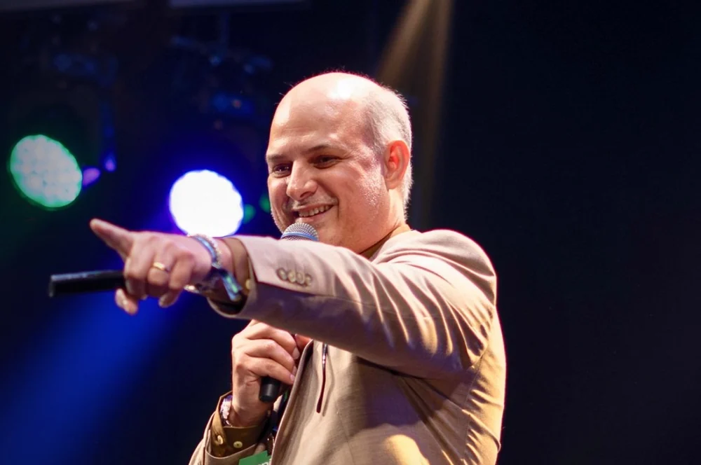

Fundador e CEO
Dr. Ronis Faria de Souza
“Sempre acreditei que educar é um ato profundamente humano. Não basta entregar conteúdo: é preciso tocar, acolher, transformar.”
- 20 anos no campo da educação
- Educador pesquisador e consultor
- Poeta empreendedor e CEO da Sapion